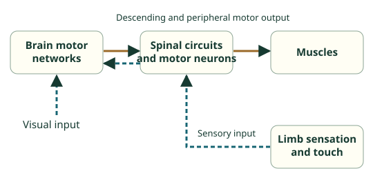
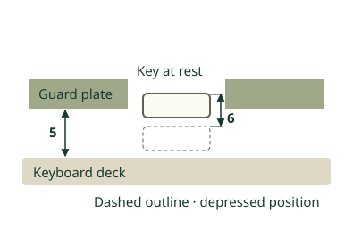

B · From intention to feedback
Follow one simplified example of how the nervous system contributes to a voluntary reach.
Read all four stages
- Brain networks help select and plan the action.
- Descending pathways influence spinal circuits. Motor neurons signal muscles through peripheral nerves.
- Muscles activate and help move or stabilise joints as the hand approaches the target.
- Touch, vision and body-position information help guide adjustments.
Motor planning and outputSensory feedback during movement
Apply the same sequence to a keyboard reach. Choose a target key, start moving towards it, and use vision, touch and body-position information to adjust the reach and press.
Open the simplified motor-control schematic

Descending signals influence spinal circuits. Peripheral motor neurons carry output to muscle. Touch and proprioceptive signals enter the spinal cord through sensory pathways and can influence spinal circuits and ascend to the brain. Vision supplies additional input through a separate route. These processes overlap throughout the reach.
AI-assisted concept illustration with animated teaching overlays. The brain silhouette, cervical cord and continuity into the arm are readable. The render does not resolve spinal roots, individual peripheral nerves or specific forearm muscles, and the overlay paths are schematic. See the neuroscience reference.
C · Fitted keyguard and alignment
Fitted. The sage grid separates the ivory keys into individual openings.
Exploded. The raised view shows the intended alignment. Terracotta marks show example registration points.
The renders show a four-row by five-column guard pattern and a matching key layout where visible. The raised guard obscures part of the key field. Perspective renders cannot establish pitch, concentricity or tolerances. The aligned views below show the intended geometry.
 Top view · Concept drawing
Top view · Concept drawing- 1 · Opening width
- Inside edge to inside edge of an aperture.
- 2 · Key spacing
- Centre-to-centre pitch along a row.
- 3 · Wall thickness
- Material between adjacent apertures.
- 4 · Registration and retention
- Terracotta tabs illustrate possible locating points. Retention would need its own fit and release check.

Cross-section · Concept drawing- 5 · Plate clearance
- Gap between the guard underside and the deck in this section. Check the moving keycap and neighbouring keys separately.
- 6 · Key travel
- Distance from the resting keycap to the illustrated depressed position.
Material and manufacturing considerations
Compare stiffness, edge comfort, cleanability and the retention method. A printed concept may help assess fit, but print orientation, tolerances and surface finish can affect individual apertures. Machining or moulding would require process-specific design checks. Measure the target keyboard before choosing any dimension or material.
AI-assisted product renders and schematic drawings. Dimensions are conceptual. No physical fit, material or manufacturing tests were performed.